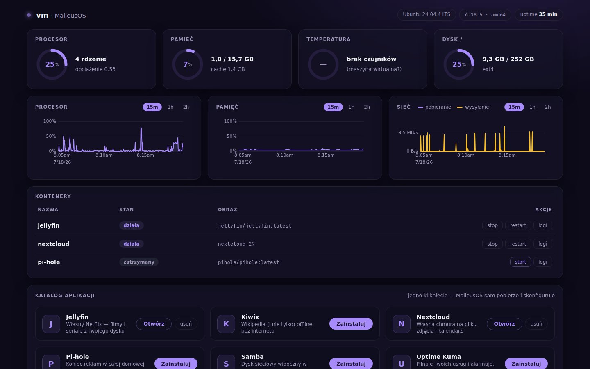
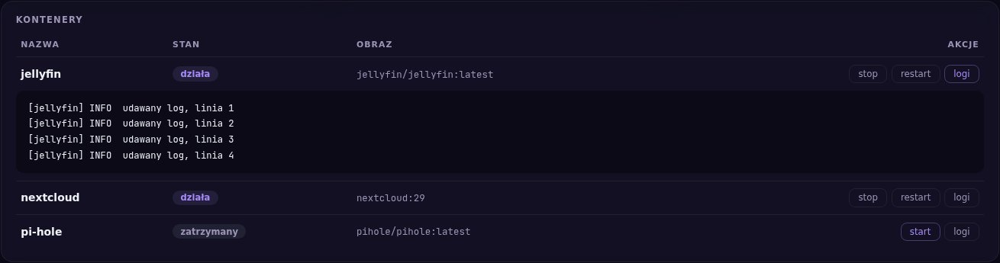
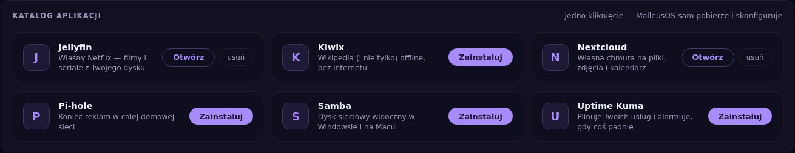

Metryki na żywo
Wykresy CPU, RAM, sieci, dysków i temperatur odświeżane co sekundę, z historią od 15 minut do 2 godzin. Kolory ostrzegają, gdy coś przekracza 70 i 90%.
Bootujesz z pendrive'a na dowolnym sprzęcie i zarządzasz homelabem bez dotykania terminala.
Wykresy CPU, RAM, sieci, dysków i temperatur odświeżane co sekundę, z historią od 15 minut do 2 godzin. Kolory ostrzegają, gdy coś przekracza 70 i 90%.
Lista wszystkiego, co chodzi w Dockerze: start, stop i restart przyciskiem, a logi płyną na ekranie na żywo — bez wpisywania ani jednej komendy.
Domowe usługi i serwery gier (Minecraft!) instalowane
jednym kliknięciem — każda usługa od razu pod adresem
w rodzaju filmy.malleus.local. Brakuje czegoś?
Dodasz własną aplikację z Docker Huba prostym formularzem.
Wklejasz link do repozytorium git albo ZIP — serwer sam zbuduje i uruchomi Twój projekt, a Ty oglądasz logi budowania na żywo.
Panel wymaga logowania od pierwszego uruchomienia. Wszystko dzieje się lokalnie, w Twojej sieci.
Wbudujesz w obudowę mały ekranik LCD? Panel wyświetli na nim metryki jak deska rozdzielcza samochodu.
Dla każdego, kto ma starego laptopa, mini-PC albo Raspberry Pi i chce mieć domowy serwer — bez spędzania wieczorów w terminalu. Wgrywasz, włączasz, wchodzisz przeglądarką. Tyle.



Twoje filmy i seriale z dysku, ładnie poukładane, do oglądania na telewizorze i telefonie.
Pliki, zdjęcia i kalendarz jak w Dropboksie czy Dysku Google — tylko że na Twoim sprzęcie.
Blokuje reklamy i śledzenie w całej domowej sieci, na każdym urządzeniu naraz.
Foldery serwera widoczne wprost w Windowsie i na Macu, jak zwykły dysk.
Pilnuje, czy Twoje strony i usługi żyją, i alarmuje, gdy coś padnie.
Cała Wikipedia (i nie tylko) na dysku — działa nawet bez internetu.
Stawiasz jednym kliknięciem, wysyłasz znajomym adres, a oni dołączają prosto z gry. Świat zapisany na Twoim dysku.
Wersja dla grających na telefonie, konsoli i w Minecrafcie z Microsoft Store.
Tunel do internetu jednym kliknięciem — gracie razem bez konfigurowania routera i publicznego IP.
MalleusOS startuje z pendrive'a na dowolnym sprzęcie — laptopie, mini-PC, Raspberry Pi. Niczego nie instalujesz na dysku.
Jeden mały program czyta metryki prosto z systemu i rozmawia z Dockerem. Bez dodatkowych agentów, baz i konfiguracji.
Panel pokazuje wszystko na żywo — wykresy same się rysują, logi płyną, aplikacje instalujesz kliknięciem.
Inne panele każą odpalać skrypty instalacyjne i stawiać bazy danych. Tu pobierasz jeden plik, uruchamiasz — koniec. Ta sama binarka na Intel/AMD i ARM.
Panel, wykresy, a nawet czcionki siedzą w środku binarki. Serwer w piwnicy bez dostępu do sieci pokaże dokładnie to samo, co podłączony do światłowodu.
Napisany w Go, bez ciężkich frameworków — panel zjada megabajty RAM-u, nie gigabajty. Dziesięcioletni laptop i Raspberry Pi wystarczą z zapasem.
Zero chmury, zero zakładania kont, zero telemetrii — nic nigdzie nie wycieka. Kod otwarty na licencji AGPL-3.0, możesz sprawdzić każdą linijkę.
| Linux amd64 | PC, laptop, serwer | malleus-linux-amd64 |
|---|---|---|
| Linux arm64 | Raspberry Pi 4/5 | malleus-linux-arm64 |
| Obraz .img | Bootowalny pendrive | wkrótce |
Sprawdzam najnowsze wydanie…
Albo trzy komendy w terminalu:
curl -LO https://github.com/terlikk/MalleusOS/releases/latest/download/malleus-linux-amd64
chmod +x malleus-linux-amd64
sudo ./malleus-linux-amd64
Potem otwierasz http://adres-serwera:8443 i panel jest
Twój. Na Raspberry Pi zamień amd64 na arm64.